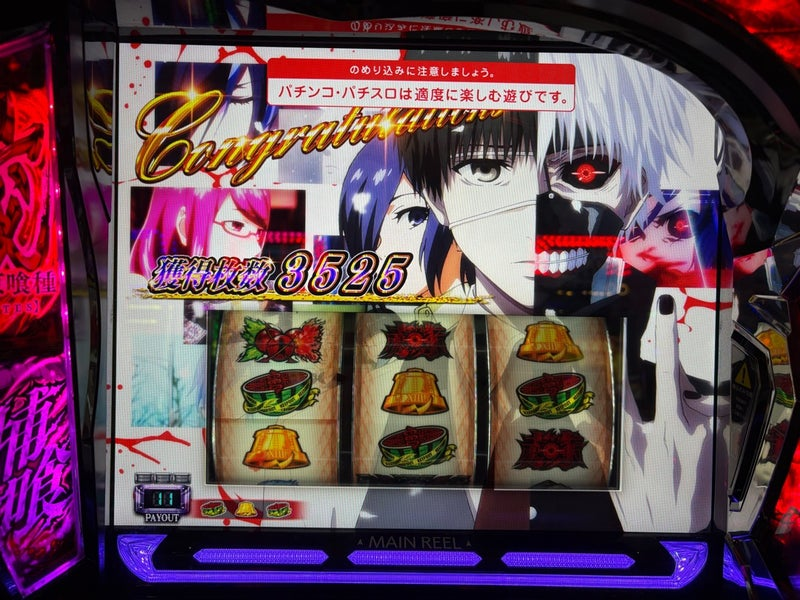

スロ探究
シュウ３が実戦中に知りたいことを、ここに。
設定示唆ややめどき、写真付きの実戦記録をまとめています。新台情報・業界ニュース・777リーグの日程もチェックできます。
01 / 新着
新着記事・更新情報
日付は実戦日・紹介日・内容更新日を区別しています。公開日が不明なものは推定していません。
- 真打 吉宗初打ち｜AT間1,500Gの天井へ。それでも真高確率は馬鹿みたいに面白かった →実戦日：
- 真打 吉宗｜設定推測・御白洲ビジョン・やめどきガイド →
- テンガイゴールデンメインズの決起集会｜一番安定感を感じるチームに期待 →
- SAO2実戦｜8,179Gで−2,938枚。当てても伸ばせず、唯一のデスガンバトルも届かず →実戦日：
- SAO2｜設定推測・終了画面・やめどきガイド →
- タコスロ実戦｜通常561Gで＋51枚。今日も今日とて、勝ち逃げです →実戦日：
同日の項目は編集上の登録順です。
02 / 機種ガイド
機種から探す
見たい演出や数値を一覧から選び、示唆の意味・有効な条件・判断時の注意点を確認できます。
03 / 実戦記録
写真付きのおすすめ実戦

おすすめの過去実戦／東京喰種／2025年3月2日
【まさかの設定6！】ようやく東京喰種をぶっ壊したお話 →
赫眼70Gから初完走。その後に約2,000枚を使った実戦を振り返る。

リコリコ／2026年10月12日
750G表示でも600G＋αで当選 →
駆け抜けが続いた前半から、リプレイで上位CZを突破。ラッシュWで挽回した一日の流れを写真で振り返る。
日付から実戦を読む
直近3日分。過去の記録は全件一覧から読めます。
04 / 予定と話題
直近の予定と、気になる話題
予定表示の基準日：2026年10月16日。日程情報の確認日とは別です。
次の導入開始予定：2026年10月19日
L魔法少女にあこがれて、L海人
機種別の確認状況・出典 →
全国予定と店舗の入替日は別です。日程情報の確認日：2026年10月14日。
次の収録予定：2026年10月21日 BLUE第5回戦
Super D’station高崎本店
収録日と動画公開日は別です。二次資料による予定で変更の可能性があります。収録情報の確認日：2026年10月14日。
05 / スロ探究について
シュウ３とスロ探究
仕事や生活と両立しながら、好きな機種を楽しんで深く知る。実戦と資料を照らし合わせ、分かったことと分からないことを残す個人メディアです。